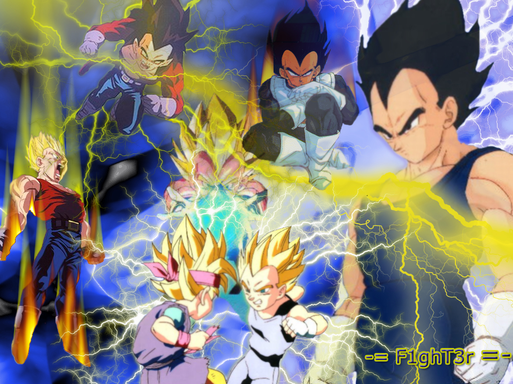
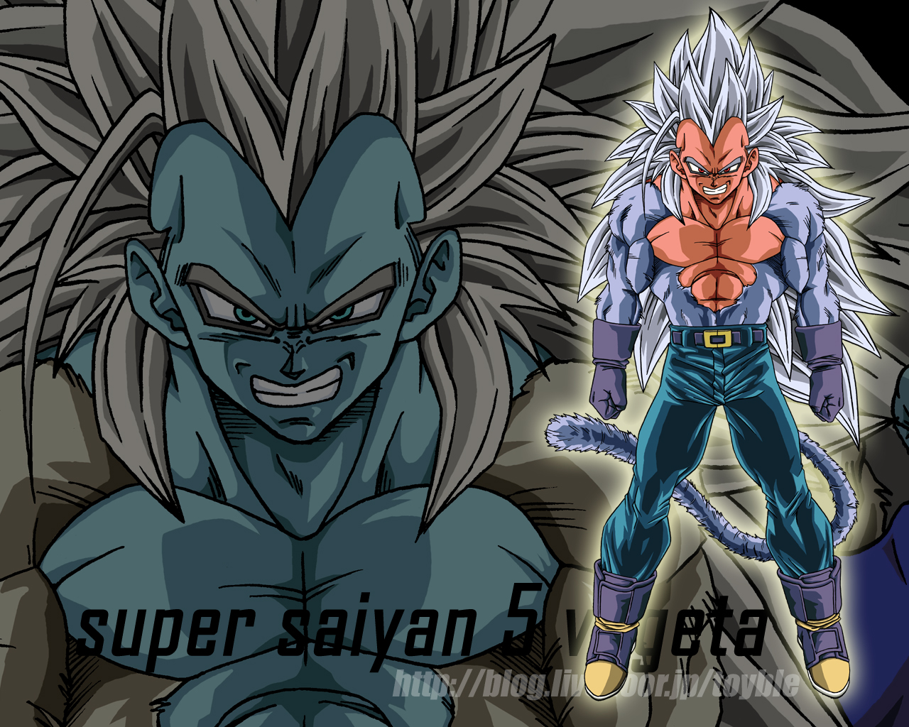

| Noticias | Spoilers | Naruto | Dragon Ball Z |
Dragon ball Z:
Dragon Ball (ドラゴンボール Doragon Bōru?, y sólo en España Bola de Dragón)2 es un manga escrito e ilustrado por Akira Toriyama , y publicado originalmente en la revista semanal Shōnen Jump entre 1984 y 1995,3 editándose luego en 42 tankōbon por Shueisha.1 En España fue publicado por la editorial Planeta DeAgostini entre 1995 y 1998,4 mientras que en Argentina y México fue publicado por la Editorial Ivrea y el Grupo Editorial Vid, respectivamente.5 6 Toriyama se inspiró en la novela china Viaje al Oeste para crear a Dragon Ball.7 8 La trama sigue las aventuras de Son Gokū desde su infancia hasta su edad adulta, período en el que básicamente se somete a un entrenamiento de artes marciales, y explora el mundo en búsqueda de siete objetos legendarios conocidos como las Dragon Ball («Esferas del Dragón» en Hispanoamérica y «Bolas del Dragón» en España), las cuales conceden cualquier deseo a su portador por medio de un gran dragón volador llamado Shenlong. A lo largo de su travesía, Gokū se hace de varios amigos y se enfrenta a una amplia variedad de villanos, muchos de los cuales también buscan las Dragon Ball para cumplir sus siniestros deseos.
Los 42 volúmenes (tankōbon) se adaptaron en dos series de anime producidas por Toei Animation: Dragon Ball y Dragon Ball Z, las cuales fueron transmitidas en Japón de 1986 a 1996. Adicionalmente, Toei ha creado 17 largometrajes animados inspirados en el manga, así como tres especiales televisivos y un anime alternativo titulado Dragon Ball GT, que continúa más allá de los acontecimientos presentados en el manga.9 Desde 2009 hasta 2011, Toei transmitió una versión remasterizada de Dragon Ball Z bajo el nombre de Dragon Ball Kai, en donde la mayoría del material de la versión original que no aparece en el manga fue removido. Es importante señalar que varias empresas han producido varios tipos de productos inspirados en Dragon Ball los cuales van desde un juego de cartas coleccionables hasta un gran número de videojuegos.
Los derechos de distribución del manga fueron concedidos a Viz Media, para su publicación en inglés en Estados Unidos, a Gollancz Manga para Reino Unido, a Chuang Yi para Australia y Nueva Zelanda, a Editorial Ivrea para Argentina, a Grupo Editorial Vid para México y a Planeta DeAgostini para España. Mientras tanto, los derechos del anime les correspondieron originalmente a Funimation Entertainment para su doblaje al inglés y su transmisión a nivel mundial, sin embargo Dragon Ball sería luego doblada por varios estudios distintos, acorde a la región donde se transmitiría. En 1989, se produjo en China una adaptación cinematográfica tipo live action (Xīn qī lóngzhū Shénlóng de chuánshuō), mientras que, en 2002, 20th Century Fox adquirió los derechos para producir una película estadounidense (Dragonball Evolution), la cual se estrenó en abril de 2009.
|  |
Desde su lanzamiento, Dragon Ball se ha convertido en uno de los mangas y animes más populares de su época, tanto en Japón como en Norteamérica. Los 42 volúmenes del manga han vendido más de 152 millones de copias solamente en su país de origen, cifra que se extiende a 200 millones si se consideran las ventas a nivel mundial.10
La serie ha logrado que sea traducida y distribuida en muchos países como España y la mayor parte de América Latina;11 12 incluso se ha hecho referencia a esta serie en muchas otros manga y anime.13 En una encuesta realizada por TV Asahi en el 2006 Dragon Ball quedó en el tercer puesto de las 100 mejores series de animación de acuerdo al público japonés con 1322 votos.14
En la encuesta realizada por la Agencia de Cultura Japonesa, sobre los 50 mejores animes y mangas de Japón, Dragon Ball alcanzó el puesto 3.15
Las artes marciales, la amistad y el afán de superación son las bases del argumento de esta serie, la cual incrementó considerablemente el interés por el manga en todo el mundo. Sin embargo, la violencia y otros contenidos considerados no apropiados para menores en muchos de sus episodios ha provocado que en Occidente se haya pedido con frecuencia la retirada de las escenas del anime[cita requerida] e, incluso, su prohibición.
Argumento
Personajes principales
Artículos principales: Personajes de Dragon Ball y Personajes de Dragon Ball exclusivos del anime
Dragon Ball es una obra muy extensa, por lo que cuenta con una enorme cantidad de personajes, de los cuales podríamos destacar:
Son Gokū (孫 悟空?) es el protagonista de Dragon Ball, a pesar de que resulta ausente durante grandes períodos de tiempo dentro de la línea argumental de la serie. Es un singular niño que creció en las montañas aprendiendo artes marciales por parte de su abuelo, ya que posee una peculiaridad, una cola y una fuerza sobrehumana. Su aventura comienza cuando conoce a Bulma y parte en busca de las Dragon Balls; siempre se enfrenta con muchas fuerzas del mal que quieren destruir el mundo. Debido a que es alumno del Muten Rōshi (武天老師 Maestro Rōshi?, Anciano Maestro Invencible), durante el XXI Tenkaichi Budōkai (天下一武道会 Torneo de Artes Marciales?, lit. «El más Fuerte bajo el Cielo») conoce al mejor discípulo del Tsuru Sen'nin (鶴仙人 Ermitaño Grulla?), Ten Shin Han (天津飯 Tien Shinhan?); aunque en un principio eran rivales, con el tiempo se transforma en un compañero de Gokū. Conforme avanza el argumento se descubre que él forma parte de una raza extraterrestre llamada Saiyan (サイヤ人 Saiyajin?), en cuyo caso su nombre real es Kakarotto (カカロット?) —la historia de su padre, Bardock (バーダック Bādakku?), es revelada durante un especial de televisión, y de igual forma, mediante flashbacks—; ésto es revalado una vez que el heramano mayor de Gokū, Raditz (ラディッツ Radittsu?), arriva a la Tierra. Durante la batalla contra Freeza (フリーザ Furīza?, Freezer), se transforma en el legendario Super Saiyan (超サイヤ人 Sūpāsaiyajin?) a causa de la acciones de aquél, y que además, de acuerdo a la leyenda, aparece una vez cada 1.000 años.
Bulma (ブルマ Buruma?) es una de la segunda persona que Gokū conoce después de su abuelo, además de entablar rápidamente con él una duradera amistad a través del transcurso de la trama. Una vez que llegan a sus oídos la leyenda de las Dragon Balls decide buscarlas, y gracias a su inteligencia, crea varios aparatos que les serán de ayuda a la mayoría de los personajes, de los cuales se puede destacar el Dragon Radar (conocido en Latinoamérica como Radar del Dragón). Al inicio de la serie, ella se enamora de Yamcha (ヤムチャ Yamucha?), con quien dura una larga relación amorosa, pero debido a varios problemas entre ambos, ella decido cortarlo; sin embrgo, durante los sucesos acediados por los androides, se da a conocer que ella dará a luz un hijo de Vegeta, el cual viaja a través del tiempo para advertir a los demás sobre una catástrofe cercana relacionada con éstos últumos.
Krilin (クリリン Kuririn?) es el compañero de Gokū y posteriormente su mejor amigo, a pesar de que mientras entrenaban con el Kame Sen'nin (亀仙人 Ermitaño Tortuga?) éste lo consideraba como un rival. Es un artista marcial que empezó su entrenamiento en un templo Shaolin, pero al sentirse marginado por los miembros mayores del templo, decidió entrenar por cuenta propia. Lo acompaña en sus aventuras y batallas, mejorando como luchador al punto de sobrepasar el límite de los seres humanos; durante su adultez, cumple su mayor sueño, el cual consistía en casarse con «una mujer hermosa», la cual resulta ser la Androide no. 18 (人造人間18号 Jinzō'ningen Jūhachigō?) con la que llega a tener una pequeña hija llamada Marron (マーロン Māron?).
Piccolo (ピッコロ Pikkoro?), también conocido como Piccolo Daimakū (ピッコロ大魔王 Pikkoro Daimaō?, Gran Rey Demonio Piccolo) debido a que es el hijo del verdadero Piccolo, el cual en realidad era la parte maligna que se separó de Kamisama (神様 Señor Dios?), el cual fue enviado a la Tierra por su padre Katattsu (カタッツ?) para que éste sobreviviera, debido a que el planeta Planeta Namek (ナメック星 Namekkusei?) estaba sufriendo graves cambios climáticos, generando la destrucción del mismo. Tiempo después, siente una relación de «padre-hijo» con el hijo mayor de Gokū, a pesar de que le guardaba un profundo odio a éste último; y durante los acontecimientos de Cell (セル Seru?) vueleve a fusionarse con su contraparte.
Son Gohan (孫 悟飯?) es el hijo mayor de Gokū y lleva el nombre del abuelo adoptivo de su padre; además durante la ausencia de él, Gohan toma el papel de protagonista en varias sagas de la serie. Al ser hijo de Milk (チチ Chichi?), resulta un híbrido saiyan-humano, lo cual le otorga poderes aún más poderosos de los que un saiyan común podría tener. Durante su adolecencia, adquiere la profesión de superhéroe en Satan City (サタンシティ Satan Shiti?, Ciudad Satán), bajo el nombre del «Gran Saiyaman». Posteriormente se casa con la hija del famoso «héroe» Mr. Satán (ミスター・サタン Misutā Satan?, Señor Satán), Videl (ビーデル Bīderu?), y con quien además llega a tener una hija llamada Pan (パン?), convirténdose en la nieta de Gokū. También tiene un hermano menor, Son Goten (孫 悟天?), el cual adquirió a una edad menor los poderes saiyan, logrando así superar a su hermano.
Vegeta (ベジータ Bejīta?) es el Príncipe de los Saiyan y de igual forma del extinto Planeta Vegeta (惑星ベジータ Wakusei Bejīta?), en el cual habitaban una de las razas de guerreros más poderosa del universo. Llegó al Planeta Tierra, junto con su compañero Nappa (ナッパ?), con el objetivo de apoderarse de las Dragon Balls —después de oír la conversación que guardaron Gokū y Raditz mediante el rastreador de éste— y así pedir el deseo de la vida eterna, para poder enfrentarse a Freeza, y convertirse en el «Emperador del Universo». El príncipe tenía un abicioso deseo por superar a Gokū, pero durante el proceso llegó a convertirse en su aliado y amigo. Llegó a tener junto con Bulma dos hijos, a pesar de que nunca se casaron.
Trunks (トランクス Torankusu?) es el extraño muchacho que viajó en el tiempo para advertir sobre una catástrofe futura; sin embargo, él le menciona a Gokū que el es de hecho el hijo de Vegeta, el cual a su vez murió junto con los demás «Guerreros Z» durante una batalla contra unos poderosos androides, a la vez que su madre Bulma lo protegió de dichas amenzas. Gohan le enseñó técnicas básicas sobre las artes marciales para poder defenderse y avisar dichos suscesos a los demás en el pasado. Sin embargo, su viaje cambió el curso de la historia, desviando el argumento hacía una tangente, en la cual evita una paradoja y previene que los androides destruyan su tiempo original, permitiendo a su vez la aparición de Majin Boo (魔人ブウ Majin Bū?); durante ésta línea de tiempo, el Trunks original se hace amigo del segundo hijo de Gokū, con el que entabla una buena amistad. Asimismo tiene una hermana, la cual se llama Bra (ブラ Bura?).
Aspectos de la serie
Temáticas
Producción
|  |
Akira Toriyama comenzó a planear un nuevo manga apenas terminó con Dr. Slump. Durante ese tiempo el mangaka era fanático de las películas de Jackie Chan, y en especial de Drunken Master, lo que lo inspiró a dibujar un manga sobre kung fu; su primer intento, un one shot llamado Dragon Boy, le trajo respuestas positivas de sus lectores por lo que decidió seguir ese camino. Decidido a usar una ambientación diferente a su anterior trabajo, la cual era occidental, comenzó a planear una ambientación china, lo cual lo llevó a tomar como base el clásico Viaje al Oeste. Al principio la historia no se separó mucho del clásico, y el autor tenía pensado terminar después de la derrota de Freezer (primer final), luego lo pospuso a la muerte de Cell (segundo final) hasta que llegó el final tras la saga de Boo. Aquí llego el final del uno de los animes que marco historia, pero la productora le ofreció a Akira seguir con la serie , lo cual el no quiso ser el autor de esta saga conocida como Dragon Ball GT pero si fue el asesor del dibujo de los personajes y otras actividades que no estaban nada vinculados a la trama de esta serie.
Contenido de la obra
Manga
Véase también: Volúmenes de Dragon Ball
El manga Dragon Ball fue escrito y dibujado por Akira Toriyama para la revista semanal Shōnen Jump, y fue publicado desde la edición número 51 de 1984 hasta la edición número 25 de 1995;3 la obra se compone de un total de 519 capítulos y un gaiden que fueron luego compilados en 42 volúmenes, de los cuales el primero fue publicado el 10 de septiembre de 1985 y el último el 4 de agosto de 1995. Si bien en este formato la sinopsis de Dragon Ball transcurre de manera indistingida a como se realiza en su versión anime, no se diferenció de esta manera sino hasta que la serie tocó suelo americano, pues en la versión estadounidense se le llegó a diferenciar por Dragon Ball Z.17 Asimismo una serie de anime comics fue publicada entre enero de 1995 y marzo de 1997 basados en las películas y especiales de televisión que se transmitieron para complementar la serie.
En el 2004 se reeditó su versión del manga en un nuevo formato, dividido en 34 kanzenban, que incluían un final ligeramente modificado y algunas páginas a color que aparecieron en la revista semanal de Japón, que en la anterior versión —la de 42 tomos— aparecían totalmente en blanco y negro.19 Entre los años 2006 y 2007, Planeta DeAgostini comenzó a publicar esta versión en España bajo el nombre de Dragon Ball Ultimate Edition.
Dicha adaptación fue realizada por Viz Media mediante su revista mensual Shonen Jump, aunque aún continúa siendo publicada.21 Fue publicado en México (y con ello para la mayor parte de Hispanoamérica) por el Grupo Editorial Vid,[cita requerida] y en España por Planeta DeAgostini (respecto a la versión original),20 y en Francia por la Editorial Glénat.22 Además, ha sido publicado por la Editorial Ivrea en Argentina, aunque la serie completa aún no ha sido del todo concluida.
Spin-offs
A manera de autoparodia, Toriyama realizó una historia en formato one-shot titulada Neko Majin: un manga que relata la historia de un gato que posee poderes sobrenaturales, de una misma manera a como los personajes de Dragon Ball controlan el ki. A rasgos generales, el manga contiene múltples referencias y personajes de la serie de la cual se basa, tomando como eje central a un demonio que aterroriza la Tierra. Asimismo, se divide en dos partes, Neko Majin ga iru y Neko Majin Z.
Anime
Logotipo de Dragon Ball Z.
Dragon Ball
El manga fue adaptado en su totalidad al anime por Toei Animation en dos series. Los primeros 194 capítulos fueron adaptados usando el mismo nombre en 153 episodios de media hora y se emitieron en Japón desde el 26 de febrero de 1986 al 19 de abril de 1989,26 sumándole además 4 películas. A partir del capítulo 195 del manga, su adaptación al anime fue llamada Dragon Ball Z (en España Bola de Dragon Z) y fueron adaptados 291 episodios de 20 minutos emitidos desde el 26 de abril de 198927 hasta el 31 de enero de 1996,28 completando la historia del manga. También fueron creados dos especiales para televisión que ampliaban la historia, más 13 películas y 2 OVA. Ambas series fueron dobladas por Intertrack S.A. de C.V. en México,aunque los primeros 60 episodios de Dragon Ball fueron doblados por Producciones Salgado29 30 . Las series son transmitidas por toda América Latina,31 y por varios estudios en España: Estudio de Barcelona dobló los primeros 26 episodios, Videotake Sur dobló el resto de la serie y Alta Frecuencia las películas y especiales, esta comenzó a transmitirse por Telemadrid y Canal Sur Televisión desde 1991.32 El 5 de abril de 2009 se estrenó una nueva versión de Dragon Ball Z llamada Dragon Ball Kai (Dragon Ball 改? Dragon Ball renovada) (en Occidente renombrada como Dragon Ball Z Kai), Dragon Ball Z remasterizada en alta definición en formato 16:9 con algunos cambios para festejar el 20.º aniversario de la serie, se regrabaron las voces y los efectos de sonido, se editó para que siga mejor el manga y se crearon nuevos openings y endings.
Véanse también: Transmisiones de Dragon Ball por televisión, Episodios de Dragon Ball, Episodios de Dragon Ball Z y Episodios de Dragon Ball Kai
Dragon Ball Z
Dragon Ball GT
Artículo principal: Dragon Ball GT
Al terminar Dragon Ball Z, Toei creó una historia llamada Dragon Ball GT, en la cual Toriyama solo participa en algunos escasos diseños de personajes al inicio de la serie y en la creación de imágenes promocionales. Esta historia continúa la vida de Gokū y sus amigos años después del final del Anime Dragon Ball Z, enfrentándose a nuevos y poderosos enemigos, como Baby,Super A-17 o los Dragones Oscuros entre otros. Además, aparece un estado superior de Super Saiyan, el Super Saiyan 4, nivel conseguido por Goku y Vegeta, además de la fusión de estos últimos en ese estado, dando lugar al guerrero más poderoso de toda la serie, Gogeta SS4. Fue estrenada el 7 de febrero de 1996,36 terminando el 19 de noviembre de 199737 con 64 episodios y un episodio especial para televisión titulado Gokū Gaiden! Yūki no akashi wa Sì Xīngqiú.38
Véase también: Episodios de Dragon Ball GT
Dragon Ball Kai
Después de los rumores que llevaban tiempo apuntando a que se realizaría una nueva serie de Dragon Ball, finalmente estos rumores están tomando forma, aunque más que nuevos capítulos; lo que se está cociendo es una revisión de la actual. Esta revisión vendría a llamarseDragon Ball Kai (改), sustituyendo la Z por el kanji (改) que se traduce como Revisado o Renovado.
Especiales de televisión
Otras animaciones
Además de la serie y las películas se crearon otras animaciones. Dos episodios de mayor duración que fueron transmitidos junto con la serie, aunque fuera de la lista normal de los episodios, a diferencia de las películas estos amplían la historia de la serie. El primero, llamado Dragon Ball Z: Tatta hitori no saishū kessen ～Freeza ni idonda zetto senshi Son Gokū no chichi～, fue transmitido el 17 de octubre de 1990 y no está basado en el manga, trata de la batalla final de Bardock, el padre de Gokū; el segundo, llamado Zetsubō e no hankō!! Nokosareta chōsenshi - Gohan to Trunks, fue transmitido el 24 de febrero de 1993 y está basado en un gaiden del manga, cuenta la historia de Trunks del futuro antes de que éste viajase al pasado.
Una OVA de dos episodios titulada Dragon Ball Z Gaiden: Saiyajin Zetsumetsu Keikaku salió a la venta 6 de agosto de 1993, esta fue creada como una guía visual para el videojuego de NES del mismo nombre. Esta OVA, a diferencia del resto del anime, fue producida por Bandai, aunque mantiene muchos elementos de éste, como los seiyū originales.
El 21 de septiembre del 2008 se estrenó una animación especial para el Jump Anime Tour llamada Ossu! Kaette kita Son Gokū to nakamatachi!! (オッス！帰ってきた孫悟空と仲間たち！！? Ossu! Vuelven Son Gokū y sus amigos), ésta fue anunciada el 21 de abril se anunció en la revista Shōnen Jump.41 42
Dragon Box
El 19 de marzo del 2003 comenzaron a salir a la venta en Japón varias cajas recopilatorias que contenían toda la serie y material extra, la primera contenía los episodios de Dragon Ball Z desde el 1 hasta el 147 en 26 DVD y una figura de acción de Gokū; la segunda salió a la venta el 18 de septiembre del mismo año y contenía el resto de los episodios de Dragon Ball Z en otros 26 DVD junto con una figura de acción de Piccolo. Luego de esta caja, el 7 de julio del 2004 salió a la venta una tercera caja con los 153 episodios de la primera serie en 26 DVD. Una cuarta caja salió a la venta 15 de junio del 2005 con la serie Dragon Ball GT y una última caja el 14 de abril del 2006 con todas las películas. Aparte de estas cajas a partir del 2 de noviembre del 2005 comenzaron a salir DVD individuales que contienen de 4 a 6 episodios cada uno.
Películas
Se crearon 17 películas animadas basadas en la serie; de las 4 basadas en la primera serie, las primeras son una trilogía que cuenta una historia alternativa a la original y la cuarta película fue creada para el décimo aniversario del anime. Las películas basadas en Dragon Ball Z tienen tramas completamente distintas a las de la serie, y casi ninguna de ellas se realiza en la línea temporal en la que se desarrolla la serie original.39
Véanse también: Películas de Dragon Ball y Películas de Dragon Ball Z
La primera película live action creada sobre Dragon Ball fue Xīn qī lóngzhū Shénlóng de chuánshuō (新七龍珠 神龍的傳說? Nuevo Dragon Ball: La leyenda de Shenlong), creada de manera no oficial en Taiwán sin ninguna relación con Toei ni Akira Toriyama.
Desde principios del 2002, 20th Century Fox tomó los derechos para crear una película live action. En diciembre del 2007 se comenzó a rodar Dragonball Evolution, dirigida por James Wong con Justin Chatwin como protagonista, y fue estrenada en abril de 2009.
Bandas sonoras
La música de fondo fue compuesta por Shunsuke Kikuchi.44 a excepción de los openings y endings. Durante la primera serie solo se utiliza un tema de apertura y un tema de clausura, como tema de apertura (también conocido como opening), usa la canción Makafushigi Adventure! interpretada por Hiroki Takahashi,45 asimismo, usa como tema de clausura (o ending) la melodía Romantic Ageru Yo, interpretada por Ushio Hashimoto.44 Dragon Ball Z, en cambio, tiene dos temas de apertura y dos temas de clausura: Los temas de apertura fueron Cha-La Head-Cha-La y We Gotta Power, ambos interpretados por Hironobu Kageyama; los temas de clausura fueron Dete Koi Tobikiri ZENKAI Power!, interpretado por MANNA, y Boku-tachi wa Tenshi datta, interpretado por Hironobu Kageyama.
La versión remasterizada Dragon Ball Kai / Dragon Ball Z Kai tiene una nueva música de fondo compuesta por Kenji Yamamoto y utiliza nuevos opening y endings llamados Dragon Soul y Yeah! Break! Care! Break! respectivamente, ambos interpretados por Takayoshi Tanimoto.
Véase también: Banda sonora de Dragon Ball
[editar] Videojuegos
Aparte del anime, la historia fue adaptada en una gran cantidad de videojuegos. Algunos salieron junto a la historia del manga o anime, ya sea en Japón o América e iban adaptando partes de la misma. Más adelante otros videojuegos, recogen partes de toda la historia y sus personajes. El primer video juego creado sobre Dragon Ball fue Dragon Ball: Dragon Daihikyō para el Super Cassette Vision de Epoch Co., Ltd. en 1986, aunque este juego no salió de Japón.46 El segundo juego llamado Dragon Ball: Shenlong no Nazo para el NES, lanzado también en 1986, fue lanzado en América en 1988 y en Francia en 1991,47 48 la versión francesa fue llamada Dragon Ball: le Secret du Dragon y la versión Americana Dragon Power, a esta última se le quitaron las referencias a la serie para evitar la licencia de Toei Animation.49 50 El último videojuego lanzado es Dragon Ball Z: Attack of the Saiyans, un RPG para Nintendo DS lanzado para el 29 de abril de 2009 en Japón y anunciado para otoño de 2009 en Europa.51 Dragon Ball Online, un MMORPG para PC anunciando para el 2009, únicamente en Japón;;52 Dragon Ball: Revenge of King Piccolo, un juego de aventura para Wii anunciado para otoño de 2009; y Dragon Ball Z: Raging Blast, un juego de peleas para PlayStation 3 y Xbox 360 anunciado para todo el mundo.53
Véase también: Videojuegos de Dragon Ball
Otros libros
Basados en la obra se han creado muchos libros con información adicional sobre la historia y sus personajes como los Daizenshū54 o Biblia de Dragon Ball, creada por Vicente Ramírez en 2004 y publicado por la editorial Dolmen.55 Y además las películas, especiales de TV y varias partes del anime han sido adaptadas en diversos Anime comics.
Juegos de cartas coleccionables
Artbooks y guías
Recepción
Cosplay de Dragon Ball Z, en 2008.
Tanto el manga como el anime han sido traducidos en muchos idiomas y distribuidos en muchos países.11 12 Gracias a su fama se han creado muchos videojuegos y figuras de colección;59 también ha sido parodiado con series como Dragon Fall y en otros mangas y anime.13 Además, desde su final han existido rumores de supuestas continuaciones. En el 2004 se realizo en Japón una actividad especial para conmemorar el 20 aniversario de la serie.60 Dragon Ball quedo en el tercer puesto de las 100 mejores series de animación de acuerdo al público japonés en una encuesta realizada por TV Asahi en el 2005, con 1322 votos.
[editar] Dragon Ball en España
Artículo principal: Anexo:Dragon Ball en España
Violencia
Aunque durante su emisión en las cadenas autonómicas españolas ya había levantado cierta polémica, fue tras su llegada a Antena 3 cuando levantó muchas protestas por parte de diversas asociaciones de espectadores, que consideraban que esta serie exalta la violencia, la competitividad y el sexismo, por lo que pidieron reiteradamente su retirada. A pesar de las controversia, muchos abogan por los valores que se enseñan en toda la serie a través de las vivencias de Gokū (amistad, solidaridad, compasión, etc.).
[editar] Supuestas continuaciones
[editar] Dragon Ball AF
Después de la finalización definitiva de Dragon Ball, comenzaron a circular en Internet varios videos que supuestamente eran una continuación de Dragon Ball GT, llamado Dragon Ball AF (After Future62 ); en realidad era un fanart dibujado con un estilo similar a los dibujos de Akira Toriyama, en el cual se mostraban cosas como Gokū Super Saiyajin 5 y otras trasformaciones o fusiones. Este dōjinshi, realizado por un grupo de dibujantes nipones que responden al nombre de Toyble, ha gozado de tanta aceptación entre los fans que se ha convertido en una serie regular (a razón de una o dos páginas mensuales), con 3 tomos en su haber. La trama, que se sitúa justo después de los acontecimientos mostrados en Dragon Ball GT, cuenta la llegada a la Tierra de un poderoso guerrero llamado Zaikou, acompañado de Lila, la Kaioh-shin del Oeste (supuestamente asesinada por Boo miles de años antes). Zaikou, que se identifica como el hijo y sucesor de Gokū, se enfrenta a Vegeta, Trunks y Gohan que, por sorpresa de todos, también pueden transformarse en Super Saiyajin 4 salvo por Trunks. Además de Dragon Ball AF, Toyble también ha realizado una precuela llamada Dragon Ball Zero, que narra las aventuras de Raditz y Turles en el momento de la destrucción del planeta Vegeta de la mano de Freezer. Este hecho explica, por supuesto no de manera oficial, cómo sobrevivieron estos dos personajes a la destrucción de su raza.
Este dōjinshi generó una oleada de información falsa en Internet, con gran cantidad de blogs y webs que hablaban de novedades de la supuesta nueva saga (puesto que muchos aficionados lo tomaron como una continuación oficial). Uno de los sucesos más relevantes fue la publicación en Internet de una página escaneada de una revista japonesa con información real de Dragon Ball AF. En realidad se trataba de una broma realizada por aficionados norteamericanos, que cambiaron las imágenes de esa página por imágenes de Dragon Ball AF, cambiando ligeramente también el texto. Cuando esa página fue traducida del japonés se descubrió que hablaba de un tema totalmente distinto. Estos rumores han sido aprovechados por varios fans para publicitar sus propios fanarts o dōjinshis (siendo los más conocidos Dragon Ball Reborn, Dragonball FD, Dragon Ball Multiverse, Dragon Ball EX, entre otros).
seguidores
Buscador
Usuario